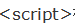

UI框架
Pc端
1.bootStrap
2.ZUI
ZUI是一个开源前端实践方案，帮助你快速构现代跨屏应用。
一个基于 Bootstrap 深度定制开源前端实践方案，帮助你快速构建现代跨屏应用。
http://zui.sexy/#/
ZUI Github地址：https://github.com/easysoft/zui
3.H-ui
H-ui前端框架是在bootstrap的思想基础上基于 HTML、CSS、javascript开发的轻量级web前端框架，开源免费，简单灵活，兼容性好，满足大多数中国网站。
兼容IE8
H-ui Github地址：https://github.com/jackying
移动端
1.SUI Mobile
阿里巴巴共享业务事业部UED团队打造
轻量，小巧且精美的UI库
方便迅速搭建手机H5应用
http://m.sui.taobao.org/components/#infinitescroll
2.Frozen UI
Frozen UI 是一个简单易用，轻量快捷，为移动端服务的前端框架，专注于移动web的UI框架，基于腾讯手机QQ规范。
Frozen UI Github地址：http://frozenui.github.io/
3.mui
mui是最接近原生APP体验的高性能框架。
mui Github地址：https://github.com/dcloudio/mui
4.Ionic
IONIC 是目前最有潜力的一款 HTML5 手机应用开发框架。通过 SASS 构建应用程序，它提供了很多 UI 组件来帮助开发者开发强大的应用。 它使用 JavaScript MVVM 框架和 AngularJS 来增强应用。提供数据的双向绑定，使用它成为 Web 和移动开发者的共同选择。Ionic是一个专注于用WEB开发技术，基于HTML5创建类似于手机平台原生应用的一个开发框架。Ionic框架的目的是从web的角度开发手机应用，基于PhoneGap的编译平台，可以实现编译成各个平台的应用程序。
JS框架
1.Zepto.js
地址：http://www.css88.com/doc/zeptojs/
描述：Zepto是一个轻量级的针对现代高级浏览器的JavaScript库， 它与jquery有着类似的api。 如果你会用jquery，那么你也会用zepto。关于Zepto认知我也是通过与一位腾讯朋友聊天的时候知道的，只作了些基础的了解。
2.SUI Mobile
地址：http://m.sui.taobao.org
描述：SUI Mobile 是一套基于 Framework7 开发的UI库。它非常轻量、精美，只需要引入我们的CDN文件就可以使用，并且能兼容到 iOS 6.0+ 和 Android 4.0+，非常适合开发跨平台Web App。
用途：你也看到了，他是用于无线端的Web App的开发。
3.Node.Js
地址：http://www.runoob.com/nodejs/nodejs-tutorial.html (中文网)
描述：Node.js是一个Javascript运行环境(runtime)。实际上它是对Google V8引擎进行了封装。V8引 擎执行Javascript的速度非常快，性能非常好。Node.js对一些特殊用例进行了优化，提供了替代的API，使得V8在非浏览器环境下运行得更好。
Node.js是一个基于Chrome JavaScript运行时建立的平台， 用于方便地搭建响应速度快、易于扩展的网络应用。Node.js 使用事件驱动， 非阻塞I/O 模型而得以轻量和高效，非常适合在分布式设备上运行数据密集型的实时应用。
简单的说 Node.js 就是运行在服务端的 JavaScript。
Node.js 是一个基于Chrome JavaScript 运行时建立的一个平台。
Node.js是一个事件驱动I/O服务端JavaScript环境，基于Google的V8引擎，V8引擎执行Javascript的速度非常快，性能非常好。
用途：
1. RESTful API
这是NodeJS最理想的应用场景，可以处理数万条连接，本身没有太多的逻辑，只需要请求API，组织数据进行返回即可。它本质上只是从某个数据库中查找一些值并将它们组成一个响应。由于响应是少量文本，入站请求也是少量的文本，因此流量不高，一台机器甚至也可以处理最繁忙的公司的API需求。
2. 统一Web应用的UI层
目前MVC的架构，在某种意义上来说，Web开发有两个UI层，一个是在浏览器里面我们最终看到的，另一个在server端，负责生成和拼接页面。
不讨论这种架构是好是坏，但是有另外一种实践，面向服务的架构，更好的做前后端的依赖分离。如果所有的关键业务逻辑都封装成REST调用，就意味着在上层只需要考虑如何用这些REST接口构建具体的应用。那些后端程序员们根本不操心具体数据是如何从一个页面传递到另一个页面的，他们也不用管用户数据更新是通过Ajax异步获取的还是通过刷新页面。
3. 大量Ajax请求的应用
例如个性化应用，每个用户看到的页面都不一样，缓存失效，需要在页面加载的时候发起Ajax请求，NodeJS能响应大量的并发请求。 总而言之，NodeJS适合运用在高并发、I/O密集、少量业务逻辑的场景。
4.angular.Js
地址：http://www.runoob.com/angularjs/angularjs-tutorial.html (中文网)
描述：AngularJS[1] 诞生于2009年，由Misko Hevery 等人创建，后为Google所收购。是一款优秀的前端JS框架，已经被用于Google的多款产品当中。AngularJS有着诸多特性，最为核心的是：MVVM、模块化、自动化双向数据绑定、语义化标签、依赖注入等等。
用途：通过描述我们应该就能很好的明白AngularJS的真实用途了，MVVM，模块化，自动化双向数据绑定等等。除了简单的dom操作外，更能体现Js编程的强大。当然应用应该视场合而定。
5.JQuery Mobile
地址：http://www.w3school.com.cn/jquerymobile/ (中文网)
描述：Query Mobile是jQuery 在手机上和平板设备上的版本。jQuery Mobile 不仅会给主流移动平台带来jQuery核心库，而且会发布一个完整统一的jQuery移动UI框架。支持全球主流的移动平台。jQuery Mobile开发团队说：能开发这个项目，我们非常兴奋。移动Web太需要一个跨浏览器的框架，让开发人员开发出真正的移动Web网站。
用途：jQuery Mobile 是创建移动 web 应用程序的框架。
jQuery Mobile 适用于所有流行的智能手机和平板电脑。
jQuery Mobile 使用 HTML5 和 CSS3 通过尽可能少的脚本对页面进行布局。
6.requirejs
地址：http://www.requirejs.cn/
描述：RequireJS的目标是鼓励代码的模块化，它使用了不同于传统 标签的脚本加载步骤。可以用它来加速、优化代码，但其主要目的还是为了代码的模块化。它鼓励在使用脚本时以module ID替代URL地址。
RequireJS以一个相对于baseUrl的地址来加载所有的代码。 页面顶层标签含有一个特殊的属性data-main，require.js使用它来启动脚本加载过程，而baseUrl一般设置到与该属性相一致的目录。
用途：模块化动态加载。
7.Vue.js
地址：http://cn.vuejs.org/
描述：Vue.js 是用于构建交互式的 Web 界面的库。它提供了 MVVM 数据绑定和一个可组合的组件系统，具有简单、灵活的 API。从技术上讲， Vue.js 集中在 MVVM 模式上的视图模型层，并通过双向数据绑定连接视图和模型。实际的 DOM 操作和输出格式被抽象出来成指令和过滤器。相比其它的 MVVM 框架，Vue.js 更容易上手。
8.backbone.js
地址：http://www.css88.com/doc/backbone/
描述：Backbone 为复杂Javascript应用程序提供模型(models)、集合(collections)、视图(views)的结构。其中模型用于绑定键值数据和自定义事件；集合附有可枚举函数的丰富API； 视图可以声明事件处理函数，并通过RESTful JSON接口连接到应用程序。
9.React
地址：http://reactjs.cn/react/docs/why-react.html
描述：React 是一个 Facebook 和 Instagram 用来创建用户界面的 JavaScript 库。很多人认为 React 是 MVC 中的 V（视图）。我们创造 React 是为了解决一个问题：构建随着时间数据不断变化的大规模应用程序。为了达到这个目标，React 采用下面两个主要的思想。
10.Ionic
地址：http://www.ionic.wang/js_doc-index.html
描述：Ionic既是一个CSS框架也是一个Javascript UI库。许多组件需要Javascript才能产生神奇的效果，尽管通常组件不需要编码，通过框架扩展可以很容易地使用，比如我们的AngularIonic扩展。
Ionic遵循视图控制模式，通俗的理解和 Cocoa 触摸框架相似。在视图控制模式中，我们将界面的不同部分分为子视图或包含其他视图的子视图控制器。然后视图控制器“驱动”内部视图来提供交互和UI功能。一个很好的例子就是标签栏（Tab Bar）视图控制器处理点击标签栏在一系列可视化面板间切换。
浏览我们的API文档来了解视图控制器和Ionic中可用的Javascript实用工具。
Ionic 是目前最有潜力的一款 HTML5 手机应用开发框架。通过 SASS 构建应用程序，它 提供了很多 UI 组件来帮助开发者开发强大的应用。 它使用 JavaScript MVVM 框架和 AngularJS 来增强应用。提供数据的双向绑定，使用它成为 Web 和移动开发者的共同选择。